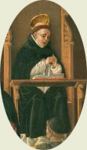

|  |
|---|
[67023] Quodlibet II, q. 1 pr. Quaesitum est de Christo, de Angelis et de hominibus. Circa Christum quaesita sunt duo de passione eius.
[67024] Quodlibet II, q. 1 pr. 1 Primo utrum in triduo mortis fuerit idem homo numero.
[67025] Quodlibet II, q. 1 pr. 2 Secundo utrum quaelibet passio Christi suffecisset ad redemptionem humani generis sine morte.
[67027] Quodlibet II, q. 1 a. 1 tit. 2 Ad primum sic proceditur: videtur quod Christus fuerit idem homo in triduo.
[67028] Quodlibet II, q. 1 a. 1 arg. 1 Dicitur enim Matth. XII, 40: sicut (...) fuit Ionas in ventre ceti tribus diebus et tribus noctibus, ita erit filius hominis in corde terrae. Sed non fuit alius filius hominis in corde terrae nisi filius hominis qui loquebatur super terram, alioquin Christus fuisset duo filii. Ergo fuit idem homo in triduo mortis.
[67029] Quodlibet II, q. 1 a. 1 arg. 2 Praeterea, Ionas fuit idem homo in ventre ceti qui prius fuerat. Sed sicut Ionas fuit in ventre ceti, ita Christus in corde terrae. Ergo etiam Christus fuit idem homo.
[67030] Quodlibet II, q. 1 a. 1 s. c. Sed contra, remota forma partis, removetur forma totius, quae resultat ex compositione formae et materiae. Sed in triduo mortis anima fuit separata a corpore Christi. Ergo desiit esse humanitas; non ergo fuit idem numero homo in triduo mortis.
[67031] Quodlibet II, q. 1 a. 1 co. Respondeo. Dicendum, quod in Christo fuerunt tres substantiae unitae, scilicet corpus, anima, et divinitas; sed corpus et anima fuerunt unita non solum in unam personam, sed in unam naturam; divinitas autem in natura quidem non potuit uniri nec animae nec corpori, quia cum sit perfectissima natura, non potest esse pars alicuius naturae; sed fuit unita corpori et animae in persona. In morte autem separata fuit anima a corpore: alioquin non fuisset vera mors Christi, de cuius ratione est quod separetur anima a corpore, quod per animam vivificatur; sed divinitas non fuit separata nec ab anima nec a corpore: quod patet ex symbolo fidei, in quo de filio Dei dicitur, quod sepultus est, et descendit ad Inferos. Corpore autem iacente in sepulcro, et anima ad Inferos descendente, non attribuerentur ista filio Dei, nisi haec duo essent ei copulata in unitate hypostasis vel personae. Et ideo de Christo in triduo mortis dupliciter loqui possumus: uno modo quantum ad hypostasim vel personam, et sic est idem numero simpliciter qui fuit; aut quantum ad naturam humanam; et hoc dupliciter. Uno modo quantum ad totam naturam, quae humanitas dicitur: et sic Christus non fuit homo in triduo mortis, unde nec idem homo, sed eadem hypostasis; aut quantum ad partem humanae naturae: et sic anima quidem fuit omnino eadem numero, eo quod non est transmutata secundum substantiam; corpus vero fuit idem numero secundum materiam, sed non secundum formam substantialem, quae est anima. Unde non potest dici quod simpliciter fuerit idem numero, quia quaelibet differentia substantialis excludit idem simpliciter; animatum autem est differentia substantialis; et ideo mori est corrumpi, non alterari tantum. Nec iterum potest dici, quod simpliciter non sit idem vel aliud, quia non est secundum totam substantiam non idem, aut aliud. Dicendum est ergo, quod fuit secundum quid idem, secundum quid non idem: secundum materiam enim idem, secundum formam vero non idem.
[67032] Quodlibet II, q. 1 a. 1 ad 1 Ad primum ergo dicendum, quod homo est nomen naturae, sed filius est nomen hypostasis; et ideo magis in triduo mortis Christus potest dici filius hominis quam homo.
[67033] Quodlibet II, q. 1 a. 1 ad 2 Ad secundum dicendum, quod similitudo non attenditur ibi quantum ad omnia, sed solum quantum ad occupationem; nam Christus fuit mortuus in corde terrae, non autem Ionas in ventre ceti.
[67035] Quodlibet II, q. 1 a. 2 tit. 2 Circa secundum sic proceditur: videtur quod alia passio Christi non suffecisset ad redemptionem humani generis sine morte.
[67036] Quodlibet II, q. 1 a. 2 arg. 1 Dicit enim apostolus ad Galat. II, 21: si ex lege est iustitia, ergo Christus mortuus est gratis, id est inutiliter et sine causa. Sed si alia passio sufficeret, Christus gratis mortuus esset. Sed hoc habet apostolus pro inconvenienti. Ergo alia passio Christi non suffecisset ad redemptionem humani generis.
[67037] Quodlibet II, q. 1 a. 2 arg. 2 Praeterea, illud emi dicitur quod iusto pretio comparatur. Sed iustum pretium pro peccato primi parentis, quo venditum est in servitutem genus humanum, esse non potuit aliud quam vita Christi, quae valet omnium hominum vitas, quae per illud peccatum privatur; nam per peccatum primi hominis mors in omnes introivit, ut dicitur ad Rom. V. Ergo non potuisset humanum genus redimi per aliam passionem Christi absque morte.
[67038] Quodlibet II, q. 1 a. 2 arg. 3 Praeterea, Gregorius dicit in III Moral., quod nisi Christus mortem indebitam suscepisset, nequaquam nos a morte debita liberaret. Ergo passio alia non suffecisset ad liberationem humani generis sine morte.
[67039] Quodlibet II, q. 1 a. 2 arg. 4 Praeterea, apostolus dicit ad Hebr. X, vers. 14, quod Christus una (...) oblatione consummavit in aeternum sanctificatos et ideo non est locus secundae oblationi. Sed manifestum est quod Christus ante mortem multas passiones sustinuit, erudiens, laborans, consputus et flagellatus. Si ergo istae passiones suffecissent, non obtulisset seipsum ad mortem. Obtulit autem seipsum hostiam Deo pro peccatis nostris, ut dicitur ad Ephes. V; et hoc per mortem. Ergo passio Christi absque morte non suffecisset.
[67040] Quodlibet II, q. 1 a. 2 s. c. 1 Sed contra. Iniuria vel passio alicuius mensuratur ex dignitate personae; maiorem enim iniuriam patitur rex si percutiatur in facie, quam aliqua privata persona. Sed dignitas personae Christi est infinita, quia est persona divina. Ergo quaelibet passio eius, quantumcumque sit minima, est infinita; quaelibet ergo passio eius suffecisset ad redemptionem humani generis, etiam sine morte.
[67041] Quodlibet II, q. 1 a. 2 s. c. 2 Praeterea, Bernardus dicit, quod minima gutta sanguinis Christi suffecisset ad redemptionem humani generis. Potuisset autem aliqua gutta sanguinis Christi effundi sine morte. Ergo etiam sine morte potuisset per aliquam passionem humanum genus redimere.
[67042] Quodlibet II, q. 1 a. 2 co. Respondeo. Dicendum, quod ad emptionem duo requiruntur: scilicet quantitas pretii, et deputatio eius ad aliquid emendum. Si enim aliquis det pretium non aequivalens ad rem aliquam acquirendam, non dicitur esse simpliciter emptio, sed partim emptio, partim donatio; puta, si aliquis emat librum qui valet viginti libras, pro decem libris, partim emeret librum, et partim sibi donaretur. Rursus si daret etiam maius pretium, et non deputaret ad emendum, non diceretur emere librum. Si ergo loquamur de redemptione humani generis quantum ad quantitatem pretii, sic quaelibet passio Christi etiam sine morte suffecisset ad redemptionem humani generis, propter infinitam dignitatem personae. Et sic procedunt duae ultimae rationes. Si autem loquamur quantum ad deputationem pretii, sic dicendum est quod non sunt deputatae ad redemptionem humani generis a Deo patre et Christo aliae passiones Christi absque morte. Et hoc triplici ratione. Primo quidem ut pretium redemptionis humani generis non solum esset infinitum valore, sed etiam esset eiusdem generis, ut scilicet nos de morte per mortem redimeret. Secundo ut mors Christi non solum esset pretium redemptionis, sed etiam exemplum virtutis, ut videlicet homines non timerent pro veritate mori. Et has duas causas assignat apostolus ad Hebr. II, 14-15, dicens: ut per mortem destrueret eum qui habebat mortis imperium, quantum ad primum; et liberaret eos qui timore mortis per totam vitam obnoxii erant servituti, quantum ad secundum. Tertio ut mors Christi esset etiam sacramentum salutis, dum nos virtute mortis Christi morimur peccato et carnalibus concupiscentiis et proprio affectui; et causa assignatur I Petri III, 18: Christus semel pro peccatis nostris mortuus est, iustus pro iniustis, ut nos offerret Deo mortificatos quidem carne, vivificatos autem spiritu. Et ideo humanum genus non est redemptum per aliam passionem absque morte Christi.
[67043] Quodlibet II, q. 1 a. 2 ad 1 Ad primum ergo dicendum, quod non sine causa deputata est mors Christi ad redemptionem humani generis, quamvis minor passio sufficere potuisset, ut dictum est.
[67044] Quodlibet II, q. 1 a. 2 ad 2 Ad secundum dicendum, quod Christus non solvendo vitam suam, sed etiam quamcumque passionem patiendo, sufficiens pretium exsolvisset pro redemptione humani generis, si minor passio ad hoc divinitus deputata fuisset; et hoc propter infinitam dignitatem personae Christi, ut dictum est.
[67045] Quodlibet II, q. 1 a. 2 ad 3 Aliae duae rationes procedunt ex hoc quod aliae passiones Christi non fuerunt deputatae ad hoc quod per eas, absque morte Christi, redimeretur humanum genus.
[67046] Quodlibet II, q. 2 pr. Deinde quaerebatur de Angelis.- Et primo quantum ad compositionem ipsorum.- Secundo quantum ad tempus motus ipsorum. Circa primum quaerebantur duo.
[67047] Quodlibet II, q. 2 pr. 1 Primo utrum Angelus substantialiter sit compositus ex essentia et esse.
[67048] Quodlibet II, q. 2 pr. 2 Secundo utrum in Angelo sit aliud suppositum et natura.
[67050] Quodlibet II, q. 2 a. 1 tit. 2 Ad primum sic proceditur: videtur quod Angelus substantialiter non componatur ex essentia et esse.
[67051] Quodlibet II, q. 2 a. 1 arg. 1 Essentia enim Angeli est ipse Angelus, quia quidditas simplicis est ipsum simplex. Si ergo Angelus componeretur ex essentia et esse, componeretur ex seipso et alio. Hoc autem est inconveniens. Non ergo substantialiter componitur ex essentia et esse.
[67052] Quodlibet II, q. 2 a. 1 arg. 2 Praeterea, nullum accidens cadit in substantialem compositionem substantiae. Sed esse Angeli est accidens; proprie enim Deo attribuit Hilarius in libro de Trinitate, quod esse non sit accidens ei, sed subsistens veritas. Ergo Angelus non est essentialiter compositus ex essentia et esse.
[67053] Quodlibet II, q. 2 a. 1 s. c. Sed contra, est quod dicitur in commento libri de causis, quod intelligentia quam dicimus Angelum, habet essentiam et esse.
[67054] Quodlibet II, q. 2 a. 1 co. Respondeo. Dicendum, quod dupliciter aliquid de aliquo praedicatur: uno modo essentialiter, alio modo per participationem. Lux enim praedicatur de corpore illuminato participative; sed si esset aliqua lux separata, praedicaretur de ea essentialiter. Secundum ergo hoc dicendum est, quod ens praedicatur de solo Deo essentialiter, eo quod esse divinum est esse subsistens et absolutum; de qualibet autem creatura praedicatur per participationem: nulla enim creatura est suum esse, sed est habens esse. Sic et Deus dicitur bonus essentialiter, quia est ipsa bonitas; creaturae autem dicuntur bonae per participationem, quia habent bonitatem: unumquodque enim, in quantum est, bonum est, secundum illud Augustini in I de doctrina Christiana, quod in quantum sumus, boni sumus. Quandocumque autem aliquid praedicatur de altero per participationem, oportet ibi aliquid esse praeter id quod participatur. Et ideo in qualibet creatura est aliud ipsa creatura quae habet esse, et ipsum esse eius; et hoc est quod Boetius dicit in Lib. de Hebdomad., quod in omni eo quod est citra primum, aliud est esse et quod est. Sed sciendum est, quod aliquid participatur dupliciter. Uno modo quasi existens de substantia participantis, sicut genus participatur a specie. Hoc autem modo esse non participatur a creatura. Id enim est de substantia rei quod cadit in eius definitione. Ens autem non ponitur in definitione creaturae, quia nec est genus nec differentia. Unde participatur sicut aliquid non existens de essentia rei; et ideo alia quaestio est an est et quid est. Unde, cum omne quod est praeter essentiam rei, dicatur accidens; esse quod pertinet ad quaestionem an est, est accidens. Et ideo Commentator dicit in V Metaphysic., quod ista propositio, Socrates est, est de accidentali praedicato, secundum quod importat entitatem rei, vel veritatem propositionis. Sed verum est quod hoc nomen ens, secundum quod importat rem cui competit huiusmodi esse, sic significat essentiam rei, et dividitur per decem genera; non tamen univoce, quia non eodem ratione competit omnibus esse; sed substantiae quidem per se, aliis autem aliter. Si ergo in Angelo est compositio sicut ex essentia et esse, non tamen est compositio sicut ex partibus substantiae, sed sicut ex substantia et eo quod adhaeret substantiae.
[67055] Quodlibet II, q. 2 a. 1 ad 1 Ad primum ergo dicendum, quod aliquando ex his quae simul iunguntur, relinquitur aliqua res tertia, sicuti ex anima et corpore constituitur humanitas, quae est homo, unde homo componitur ex anima et corpore. Aliquando autem ex his quae simul iunguntur, non resultat res tertia, sed resultat quaedam ratio composita, sicut ratio hominis albi resolvitur in rationem hominis et in rationem albi; et in talibus aliquid componitur ex seipso et alio, sicut album componitur ex eo quod est album et ex albedine.
[67056] Quodlibet II, q. 2 a. 1 ad 2 Ad secundum dicendum, quod esse est accidens, non quasi per accidens se habens, sed quasi actualitas cuiuslibet substantiae; unde ipse Deus, qui est sua actualitas, est suum esse.
[67058] Quodlibet II, q. 2 a. 2 tit. 2 Circa secundum sic proceditur: videtur quod in Angelo idem sit suppositum et natura.
[67059] Quodlibet II, q. 2 a. 2 arg. 1 In his enim quae sunt composita ex materia et forma differt suppositum et natura: quia suppositum addit supra naturam speciei materiam individualem; quod non potest esse in Angelo, si Angelus non sit compositus ex materia et forma. Ergo in Angelo non differt suppositum et natura.
[67060] Quodlibet II, q. 2 a. 2 arg. 2 Sed dicebat, quod suppositum in Angelo differt a natura, in quantum suppositum intelligitur ut habens esse, non autem natura.- Sed contra: sicut esse non ponitur in definitione naturae, ita non poneretur in definitione suppositi vel singularis, si suppositum vel singulare definiretur. Ergo suppositum per esse a natura non differt: nullo ergo modo differunt suppositum et natura.
[67061] Quodlibet II, q. 2 a. 2 s. c. Sed contra, in omnibus creaturis natura constituit suppositum. Sed nihil constituit seipsum. Ergo in nulla creatura est idem suppositum et natura.
[67062] Quodlibet II, q. 2 a. 2 co. Respondeo. Dicendum, quod ad huius quaestionis intelligentiam oportet considerare quid sit suppositum et quid natura. Natura autem quamvis multipliciter dicatur, tamen uno modo dicitur natura ipsa substantia rei, ut dicitur in V Metaph., secundum quod substantia significat essentiam vel quidditatem rei, vel quid est. Illud ergo significatur nomine naturae, prout hic loquimur de natura, quod significat definitio: unde Boetius dicit in libro de duabus naturis, quod natura est unumquodque informans specifica differentia: differentia enim specifica est completiva definitionis. Suppositum autem est singulare in genere substantiae, quod dicitur hypostasis vel substantia prima: et quia substantiae sensibiles compositae ex materia et forma sunt magis nobis notae, ideo in eis primo videamus quomodo se habet essentia vel natura ad suppositum. Dicunt autem quidam, quod forma partis est idem cum forma totius, quae dicitur essentia vel natura, secundum rem, sed differt sola ratione: nam forma partis dicitur in quantum facit materiam esse in actu; forma autem totius in quantum constituit speciem: sicut anima dicitur forma partis, in quantum facit corpus esse in actu; et similiter dicitur anima forma totius in quantum constituit speciem humanam, et sic dicitur humanitas. Et secundum hoc, in rebus compositis ex materia et forma, natura est pars suppositi: nam suppositum est individuum compositum ex materia et forma, ut dictum est. Sed praedicta positio non videtur esse vera, quia, ut dictum est, natura vel essentia dicitur id quod significat definitio. Definitio autem in rebus naturalibus non solum significat formam, sed etiam materiam, ut dicitur in Lib. VI Metaphysic. Nec potest dici quod materia ponatur in definitione rei naturalis sicut non existens de essentia eius: hoc enim est proprium accidentis ut definiatur per aliquod quod non est essentia eius, scilicet per subiectum; et ideo habet essentiam incomplete, ut dicitur in VI Metaphys. Relinquitur ergo quod in rebus compositis ex materia et forma, essentia vel natura non sit sola forma, sed compositum ex materia et forma. Restat ergo considerandum, cum suppositum vel individuum naturale sit compositum ex materia et forma, utrum sit idem essentiae vel naturae. Et hanc quaestionem movet philosophus in libro VII Metaph. ubi inquirit, utrum sit idem unumquodque, et quod quid est eius: et determinat, quod in his quae dicuntur per se, idem est res et quod quid est rei; in his autem quae dicuntur per accidens, non est idem. Homo enim nihil est aliud quam quod quid est hominis: nihil enim aliud significat homo quam animal gressibile bipes; sed res alba non est idem omnino ei quod quid est album, quod scilicet significatur nomine albi: nam album nihil significat nisi qualitatem, ut dicitur in praedicamentis: res autem alba est substantia habens qualitatem. Secundum hoc ergo, cuicumque potest aliquid accidere quod non sit de ratione suae naturae, in eo differt res et quod quid est, sive suppositum et natura. Nam in significatione naturae includitur solum id quod est de ratione speciei; suppositum autem non solum habet haec quae ad rationem speciei pertinent, sed etiam alia quae ei accidunt; et ideo suppositum signatur per totum, natura autem, sive quidditas, ut pars formalis. In solo autem Deo non invenitur aliquod accidens praeter eius essentiam, quia suum esse est sua essentia, ut dictum est; et ideo in Deo est omnino idem suppositum et natura. In Angelo autem non est omnino idem: quia aliquid accidit ei praeter id quod est de ratione suae speciei: quia et ipsum esse Angeli est praeter eius essentiam seu naturam; et alia quaedam ei accidunt quae omnino pertinent ad suppositum, non autem ad naturam.
[67063] Quodlibet II, q. 2 a. 2 ad 1 Ad primum ergo dicendum, quod non solum in compositis ex materia et forma invenitur aliquod accidens praeter essentiam ipsius speciei, sed etiam in substantiis spiritualibus quae non componuntur ex materia et forma; et ideo in utrisque suppositum non est omnino idem quod ipsa natura. Hoc tamen est aliter et aliter in utrisque. Dupliciter autem aliquid accipitur ut accidens praeter rationem rei. Uno modo quia non cadit in definitione significante essentiam rei, sed tamen est designativum vel determinativum alicuius essentialium principiorum; sicut rationale accidit animali, utpote praeter definitionem eius existens, et tamen est determinativum essentialiter animalis; unde est essentiale homini, et de ratione eius existens. Alio modo accidit aliquid alicui, quia nec est in eius definitione, nec est determinativum alicuius essentialium principiorum; sicut albedo accidit homini. His ergo quae sunt composita ex materia et forma, accidit aliquid praeter rationem speciei existens utroque modo. Cum enim de ratione speciei humanae sit quod componatur ex anima et corpore, determinatio corporis et animae est praeter rationem speciei, et accidit homini in quantum est homo, quod sit ex hac anima et ex hoc corpore; sed convenit per se huic homini, de cuius ratione esset, si definiretur, quod esset ex hac anima et ex hoc corpore; sicut de ratione hominis communis est quod sit ex anima et corpore. Accidunt etiam compositis ex materia et forma praeter rationem speciei multa alia quae non sunt determinativa essentialium principiorum. Substantiis vero immaterialibus creatis accidunt quidem aliqua praeter rationem speciei quae non sunt determinativa essentialium principiorum, ut dictum est; non tamen accidunt eis aliqua quae sunt determinativa essentiae speciei: quia ipsa natura speciei non individuatur per materiam, sed per seipsam, ex hoc quod talis forma non est nata recipi in aliqua materia; unde per se ipsam non est multiplicabilis, neque praedicabilis de pluribus. Sed quia non est suum esse, accidit ei aliquid praeter rationem speciei, scilicet ipsum esse, et alia quaedam quae attribuuntur supposito, et non naturae; propter quod suppositum in eis non est omnino idem cum natura.
[67064] Quodlibet II, q. 2 a. 2 ad 2 Ad secundum dicendum, quod non omne quod accidit alicui praeter rationem speciei, est determinativum essentiae ipsius, ut oporteat illud poni in ratione eius, sicut dictum est. Et ideo, licet ipsum esse non sit de ratione suppositi, quia tamen pertinet ad suppositum, et non est de ratione naturae, manifestum est quod suppositum et natura non sunt omnino idem in quibuscumque res non est suum esse.
[67065] Quodlibet II, q. 2 a. 2 ad s. c. Ad illud vero quod in contrarium obiicitur, dicendum, quod natura dicitur constituere suppositum etiam in compositis ex materia et forma, non quia natura sit una res et suppositum alia res (hoc enim est secundum opinionem dicentium quod natura speciei sit forma tantum, quae constituit suppositum sicut totum); sed quia secundum modum significandi natura significatur ut pars, ratione supradicta, suppositum vero ut totum; natura significatur ut constituens, et suppositum ut constitutum.
[67066] Quodlibet II, q. 3 pr. Deinde quaesitum est de tempore, per quod Deus movet creaturam spiritualem, secundum Augustinum.
[67068] Quodlibet II, q. 3 tit. 2 Et videtur quod sic.
[67069] Quodlibet II, q. 3 arg. 1 Quia neque Augustinus diversitatem hanc temporum assignat, neque aliquis philosophus. Vanum ergo videtur hanc diversitatem temporum assignare.
[67070] Quodlibet II, q. 3 arg. 2 Praeterea, omne quod est, in quantum est, unum est. Si ergo non sit unum tempus, sed diversa, non erit ens; quod est inconveniens. Oportet ergo ponere unum tempus tantum.
[67071] Quodlibet II, q. 3 s. c. 1 Sed contra. Tempus quo mensurantur corporales motus, est numerus motus primi caeli, secundum philosophum in Lib. IV Physic. Sed tempus per quod moventur Angeli, non habet aliquem ordinem ad motum. Ergo illud tempus est aliud a tempore corporalium rerum.
[67072] Quodlibet II, q. 3 s. c. 2 Praeterea, perpetuo et corruptibili nihil est commune nisi secundum nomen, ut dicitur in X Metaphysic. Sed Angeli sunt perpetui, corpora autem sunt corruptibilis. Non ergo idem tempus est utrorumque.
[67073] Quodlibet II, q. 3 co. Respondeo. Dicendum, quod, sicut Augustinus dicit in II de Civit. Dei, tempora non fuissent, nisi creatura fieret, quae aliquid aliqua motione mutaret: cuius mutationis cum aliud atque aliud, quae simul esse non possunt, cedit atque succedit, sequitur tempus. Ex quo accipitur quod etiam philosophus dicit in IV Physic., quod oportet loqui de tempore secundum rationem motus; nam tempus est numerus motus secundum prius et posterius. Omnes ergo motus qui possunt mensurari una mensura, habent unum tempus; si qui vero motus sunt qui non possunt una mensura mensurari, necesse est quod eorum sit diversum tempus. Cum autem mensura sit homogenea mensurato, ut dicitur in Lib. X Metaphys.; manifestum est quod omnia quae sunt unius generis, possunt habere unam mensuram communem, non autem quae sunt generum diversorum. Omnes autem motus continui conveniunt in uno genere, in quantum sunt commensurabiles, et ideo possunt habere unam mensuram communem. Mensurantur enim omnes simplicissimo modo sui generis, scilicet velocissimo motu primi caeli. Unde omnium motuum continuorum potest esse unum tempus commune. Quod quidem tempus, licet videatur esse secundum genus de numero discretorum, quia est numerus harum rerum continuarum, scilicet motuum, fit et ipsum continuum; sicut decem simpliciter dictum, est aliquid discretum; sed decem ulnae panni est aliquid continuum. Discretorum autem et continuorum non potest esse una mensura communis, cum sint diversorum generum, in quantum sunt mensurabilia; et ideo necesse est, si sunt aliqui motus continui, quod tempus eorum aliud sit a motu quo mensurantur motus discreti. Manifestum est autem quod motus spiritualium creaturarum, de quibus Augustinus loquitur, dicens creaturam spiritualem moveri per tempus et non per locum, non sunt motus continui, sed vicissitudines quaedam discretae. Dicit enim, quod per tempus movetur animus, vel reminiscendo quod oblitus erat, vel discendo quod nesciebat, vel volendo quod nolebat. Unde manifestum est, quod cum tempus non habeat continuitatem nisi ex motu, quod tale tempus non habeat continuum, et quod est aliud a tempore corporalium rerum.
[67074] Quodlibet II, q. 3 ad 1 Ad primum ergo dicendum, quod Augustinus ex ipsa differentia motuum dat intelligere differentiam temporum.
[67075] Quodlibet II, q. 3 ad 2 Ad secundum dicendum, quod eo modo aliquid est unum, quo est et dicitur esse. Quod enim dicitur esse secundum speciem, est unum specie, non autem unum numero. Unde non sequitur, si sint plures homines, quod non sit homo. Et similiter non sequitur, si sint plura tempora, quod non sit tempus.
[67076] Quodlibet II, q. 4 pr. Deinde quaesitum est de homine.- Et primo quantum ad virtutes.- Secundo quantum ad peccata.- Tertio quantum ad poenas. Circa virtutes autem fuit quaesitum et quantum ad res divinas, et quantum ad res humanas. Quantum ad res divinas, quaesita sunt tria.
[67077] Quodlibet II, q. 4 pr. 1 Primo circa fidem; utrum aliquis teneretur credere Christo visibilia miracula non facienti.
[67078] Quodlibet II, q. 4 pr. 2 Secundo circa fidei sacramentum; utrum parvuli Iudaeorum sint baptizandi invitis parentibus.
[67079] Quodlibet II, q. 4 pr. 3 Tertio circa decimas quae debentur ministris sacramentorum; utrum aliquis propter consuetudinem possit excusari ne decimas solvat.
[67081] Quodlibet II, q. 4 a. 1 tit. 2 Ad primum sic proceditur: videtur quod Christo non facienti visibilia miracula homines credere non tenerentur.
[67082] Quodlibet II, q. 4 a. 1 arg. 1 Quicumque enim non facit hoc ad quod tenetur, peccat. Sed si homines non crederent Christo miracula non facienti, non peccarent; dicit enim ipse, Ioan. XV, 24: si opera non fecissem in eis quae nullus alius fecit, peccatum non haberent; et loquitur de peccato infidelitatis, secundum Augustinum. Ergo Christo, si non fecisset miracula, homines credere non tenerentur.
[67083] Quodlibet II, q. 4 a. 1 arg. 2 Praeterea, nullus potest mutare legem nisi legislator, vel eo superior. Sed Christus praedicabat quaedam quae videbantur pertinere ad veteris legis abolitionem; sicut quod cibi non coinquinarent hominem, et quod licet in sabbato operari. Si ergo non probasset se esse legislatorem, non fuisset ei credendum. Sed hoc fieri non potuisset nisi per miracula, cum legislatorem multa miracula praecesserint. Ergo Christo non erat credendum, nisi miracula fecisset.
[67084] Quodlibet II, q. 4 a. 1 arg. 3 Sed contra. Magis obligantur homines ad credendum primae veritati quam ad credendum visibilibus signis. Sed licet Christus miracula non fecisset, ipse tamen verus Deus existens, prima veritas erat. Ergo etiam si miracula non fecisset, adhuc erat ei credendum.
[67085] Quodlibet II, q. 4 a. 1 arg. 4 Praeterea, gratia unionis est maior quam gratia gratum faciens per adoptionem. Sed miracula non sufficienter probant gratiam gratum facientem: quia, ut habetur Matth., VII, v. 22, his qui Christo in iudicio dicent: domine (...) in nomine tuo virtutes multas fecimus; respondebitur: non novi vos. Ergo multo minus miracula sufficiunt ad probandum gratiam unionis. Si ergo sine miraculis Christo homines credere non tenerentur, neque etiam miraculis factis tenebantur credere dicenti se esse Deum: quod patet esse falsum.
[67086] Quodlibet II, q. 4 a. 1 co. Respondeo. Dicendum, quod nullus tenetur ad hoc quod est supra vires suas nisi per hunc modum quo sit sibi possibile. Credere autem est super potentiam hominis naturalem, unde ex dono Dei provenit, secundum illud apostoli ad Ephes., II, 8: gratia salvati estis per fidem, et hoc non ex vobis, Dei enim donum est; et ad Philipp., I, 29, dicit: vobis datum est non solum ut in ipsum credatis, sed ut pro ipso patiamini. Homo ergo tenetur credere secundum hoc quod adiuvatur a Deo aliquis ad credendum. Adiuvatur autem a Deo aliquis ad credendum tripliciter. Primo quidem per interiorem vocationem, de qua dicitur Ioan., VI, 45: omnis qui audivit a patre, et didicit, venit ad me; et ad Roman., VIII, 30: quos praedestinavit, hos et vocavit. Secundo per doctrinam et praedicationem exteriorem, secundum illud apostoli ad Roman., X, 17: fides ex auditu, auditus autem per verbum Christi. Tertio per exteriora miracula; unde dicitur I Corinth., XIV, 22, quod signa data sunt infidelibus, ut scilicet per ea provocentur ad fidem. Si autem Christus visibilia miracula non fecisset, adhuc remanebant alii modi attrahendi ad fidem, quibus homines acquiescere tenerentur. Tenebantur enim homines credere auctori legis et prophetarum. Tenebantur etiam interiori vocationi non resistere, sicut Isaias, de se dicit: dominus Deus aperuit mihi aurem; ego autem non contradico, retrorsum non abii; sicut de quibusdam dicitur Act., VII, 51: vos semper spiritui sancto restitistis.
[67087] Quodlibet II, q. 4 a. 1 ad 1 Ad primum ergo dicendum, quod inter illa opera quae Christus in hominibus fecit, annumerari etiam debet vocatio interior, qua quosdam attraxit; sicut Gregorius dicit in quadam homilia, quod Christus per misericordiam Magdalenam traxit interius, qui etiam per clementiam suscepit foris. Annumerari etiam debet eius doctrina, cum etiam ipse dicat: si non venissem, et locutus eis non fuissem, peccatum non haberent.
[67088] Quodlibet II, q. 4 a. 1 ad 2 Ad secundum dicendum, quod Christus poterat se ostendere esse legislatorem non solum faciendo visibilia miracula, sed etiam per auctoritatem Scripturae, et per interiorem instinctum.
[67089] Quodlibet II, q. 4 a. 1 ad 3 Ad tertium dicendum, quod interior instinctus, quo Christus poterat se manifestare sine miraculis exterioribus, pertinet ad virtutem primae veritatis, quae interius hominem illuminat et docet.
[67090] Quodlibet II, q. 4 a. 1 ad 4 Ad quartum dicendum, quod miracula visibilia fiunt virtute divina ad confirmationem virtutis fidei; unde dicitur Marci, XVI, 20, de apostolis, quod praedicaverunt ubique, domino cooperante, et sermonem confirmante sequentibus signis. Non autem fiunt miracula semper ad demonstrandum gratiam eius per quem miracula fiunt; et ideo potest contingere quod aliquis gratiam gratum facientem non habens, miracula faciat. Sed hoc contingere non potest quod aliquis falsam doctrinam annuntians, vera miracula faciat, quae nisi virtute divina fieri non possunt; sic enim Deus esset falsitatis testis, quod est impossibile. Cum ergo Christus se filium Dei diceret, et aequalem Deo, hanc eius doctrinam comprobabant miracula quae faciebat; et ideo ostendebatur Christus per miracula quae faciebat, esse Deus. Petrus autem, licet eadem vel maiora miracula faceret, non probabatur esse Deus, sed per ea etiam probabatur quod Christus esset Deus; quia Petrus non praedicabat seipsum, sed Iesum Christum esse Deum.
[67092] Quodlibet II, q. 4 a. 2 tit. 2 Ad secundum sic proceditur: videtur quod pueri Iudaeorum sint baptizandi invitis parentibus.
[67093] Quodlibet II, q. 4 a. 2 arg. 1 Maius enim est vinculum matrimoniale quam ius paternae potestatis; quia paterna potestas potest per hominem solvi, cum filius familias emancipatur; vinculum autem matrimoniale non potest solvi per hominem, secundum illud Matth., XIX, 6: quos Deus coniunxit, homo non separet. Sed propter infidelitatem solvitur vinculum matrimoniale; dicit enim apostolus, I ad Cor., VII, 15: quod si infidelis discedit, discedat: non enim servituti est subiectus frater aut soror in huiusmodi; et canon dicit quod si coniux infidelis non vult cohabitare sine contumelia creatoris, quod alter coniugum non debet ei cohabitare. Ergo multo magis propter infidelitatem tollitur ius paternae potestatis. Sic ergo infideles et Iudaei non habent ius paternae potestatis in suos filios; possunt ergo eorum filii baptizari eis invitis.
[67094] Quodlibet II, q. 4 a. 2 arg. 2 Praeterea, magis debet homini subveniri contra periculum mortis aeternae quam contra periculum mortis temporalis. Sed si aliquis videret hominem in periculo mortis temporalis et ei non ferret auxilium, peccaret. Cum ergo pueri Iudaeorum et aliorum infidelium sint in periculo mortis aeternae si parentibus relinquantur, qui eos in sua infidelitate informant, videtur quod sint eis auferendi, et baptizandi, et in fide instruendi.
[67095] Quodlibet II, q. 4 a. 2 arg. 3 Praeterea, filii servorum sunt servi et in potestate dominorum. Sed Iudaei sunt servi regum et principum. Ergo et filii eorum. Reges ergo et principes habent potestatem de filiis Iudaeorum facere quod voluerint. Nulla ergo esset iniuria, si baptizarentur invitis parentibus.
[67096] Quodlibet II, q. 4 a. 2 arg. 4 Praeterea, quilibet homo magis est Dei, a quo habet animam, quam patris carnalis, a quo habet corpus. Non est ergo iniustum, si pueri Iudaeorum carnalibus parentibus auferantur, et Deo per Baptismum consecrentur.
[67097] Quodlibet II, q. 4 a. 2 arg. 5 Praeterea, Baptismus est efficacior ad salutem quam praedicatio; quia per Baptismum statim tollitur peccati macula et reatus poenae, et aperitur ianua caeli. Sed si periculum sequatur ex defectu praedicationis, imputatur ei qui non praedicavit; ut habetur Ez., III, 18 et XXXIII, 6, de eo qui vidit gladium venientem, et non insonuerit tuba. Ergo multo magis, si pueri Iudaeorum damnentur propter defectum Baptismi, imputatur ad peccatum eis qui potuerunt baptizare et non baptizaverunt.
[67098] Quodlibet II, q. 4 a. 2 s. c. Sed contra, nemini facienda est iniuria. Fieret autem Iudaeis iniuria, si eorum filii baptizarentur eis invitis, quia amitterent ius paternae potestatis in filios iam fideles. Ergo eis invitis non sunt baptizandi.
[67099] Quodlibet II, q. 4 a. 2 co. Respondeo. Dicendum, quod maximam auctoritatem habet Ecclesiae consuetudo, quae semper est in omnibus aemulanda: quia et ipsa doctrina Catholicorum doctorum ab Ecclesia auctoritatem habet; unde magis est standum consuetudini Ecclesiae quam vel auctoritati Augustini vel Hieronymi, vel cuiuscumque doctoris. Hoc autem Ecclesiae usus nunquam habuit quod Iudaeorum filii invitis parentibus baptizarentur, quamvis fuerint retroactis temporibus multi Catholici principes potentissimi, ut Constantinus, Theodosius, et alii plures, quibus familiares fuerunt sanctissimi episcopi, ut Silvester Constantino, et Ambrosius Theodosio, qui nullo modo praetermisissent ab eis impetrare, si hoc esset consonum rationi. Et ideo periculosum videtur hanc assertionem de novo inducere, ut praeter consuetudinem in Ecclesia hactenus observatam Iudaeorum filii invitis parentibus baptizentur. Et huius ratio est duplex. Una quidem propter periculum fidei. Si enim pueri nondum usum rationis habentes Baptismum susciperent, postmodum cum ad perfectam aetatem pervenirent, de facili possent a parentibus induci ut relinquerent quod ignorantes susceperunt: quod verteretur in fidei detrimentum. Alia vero ratio est, quia repugnat iustitiae naturali. Filius enim naturaliter est aliquid patris; et primo quidem a parente non distinguitur secundum corpus, quamdiu in matris utero continetur; postmodum vero, postquam ex utero egreditur, antequam usum liberi arbitrii habeat, continetur sub parentum cura sicut sub quodam spirituali utero. Quamdiu enim usum rationis non habet puer, non differt quantum ad ea quae agit, ab animali irrationali. Unde sicut bos vel equus iure gentium vel civili est possessoris, ut utatur eo cum voluerit, sicut proprio instrumento; ita de iure naturali est quod filius antequam habeat usum rationis, sit sub cura patris; unde contra iustitiam naturalem esset, si puer antequam haberet usum liberi arbitrii, a cura parentum subtrahatur, vel de eo aliquid ordinetur invitis parentibus. Postquam autem incipit habere usum liberi arbitrii, iam incipit esse suus, et potest quantum ad ea quae sunt iuris divini vel naturalis, sibi ipsi providere; et tunc est inducendus ad fidem non coactione, sed persuasione; et potest etiam invitis parentibus consentire fidei et baptizari; non autem antequam habeat usum rationis. Unde de pueris antiquorum patrum dicitur, quod salvabantur in fide parentum: per quod datur intelligi quod ad parentes pertinet providere filiis de sua salute, praecipue antequam habeant usum rationis.
[67100] Quodlibet II, q. 4 a. 2 ad 1 Ad primum ergo dicendum, quod in vinculo matrimoniali uterque coniugum habet usum liberi arbitrii, et uterque potest invito altero fidei assentire; sed hoc non habet locum in puero antequam habeat usum rationis; sed postquam habet usum rationis, tunc tenet similitudo, si converti voluerit.
[67101] Quodlibet II, q. 4 a. 2 ad 2 Ad secundum dicendum, quod a temporali non est aliquis eripiendus contra ordinem iuris civilis: puta, si aliquis a suo iudice condemnetur ad mortem, nullus debet eum violenter eripere; unde nec aliquis debet irrumpere ordinem iuris naturalis, quo filius est sub cura patris, ut eum liberet a periculo mortis aeternae.
[67102] Quodlibet II, q. 4 a. 2 ad 3 Ad tertium dicendum, quod Iudaei sunt servi principum servitute civili, quae non excludit ordinem iuris naturalis vel divini.
[67103] Quodlibet II, q. 4 a. 2 ad 4 Ad quartum dicendum, quod homo ordinatur ad Deum per rationem, per quam Deum cognoscere potest: unde puer antequam usum rationis habeat, naturali ordine ordinatur in Deum per rationem parentum, quorum curae naturaliter subiacet; et secundum eorum dispositionem sunt circa ipsum divina agenda.
[67104] Quodlibet II, q. 4 a. 2 ad 5 Ad quintum dicendum, quod periculum quod sequitur ex praedicatione omissa, nulli imminet nisi ei cui est commissum praedicationis officium; unde in Ezech., cap. XXXIII, v. 7, praemittit: speculatorem dedi te filiis Israel. Providere autem pueris infidelium de sacramentis salutis pertinet ad parentes eorum; unde eis imminet periculum propter subtractionem sacramentorum, si eorum parvuli detrimentum salutis patiantur.
[67106] Quodlibet II, q. 4 a. 3 tit. 2 Ad tertium sic proceditur: videtur quod propter consuetudinem aliqui deobligantur a iure reddendi decimas.
[67107] Quodlibet II, q. 4 a. 3 arg. Magis enim est accipere decimas quam non dare. Sed propter consuetudinem in aliquibus terris aliqui milites accipiunt decimas, et hoc ab Ecclesia toleratur. Ergo multo magis propter consuetudinem aliqui deobligantur ut decimas non solvant, neque solvere teneantur.
[67108] Quodlibet II, q. 4 a. 3 s. c. Sed contra, ius divinum non aboletur per dissuetudinem. Sed decimae debentur de iure divino. Ergo per dissuetudinem non aboletur ius reddendi decimas. Tenentur ergo homines reddere decimas, contraria consuetudine non obstante.
[67109] Quodlibet II, q. 4 a. 3 co. Respondeo. Dicendum, quod ea quae sunt de iure positivo, per dissuetudinem abolentur; ea vero quae sunt a iure naturali vel de iure divino, nulla dissuetudine aboleri possunt. Nulla enim dissuetudine fieri potest ut sit licitum furari vel moechari. Est ergo considerandum ad propositam quaestionem, utrum dare decimas sit de iure divino, vel de iure positivo humano. Ius autem divinum in novo et in veteri testamento continetur. Et quidem non apparet in novo testamento aliquod praeceptum datum de decimis solvendis, in doctrina, dico, evangelica vel apostolica. Quod enim dicitur Matth., XXIII, 23, de solutione decimarum: haec oportuit facere, et illa non omittere, et quod dicit Pharisaeus, Luc., XVIII, 12: decimas de omnium quae possideo, magis videtur ad statum veteris testamenti pertinere, quam observantiae novi testamenti formam imponere. In veteri autem testamento triplex genus praeceptorum erat. Quaedam enim erant praecepta moralia, quaedam iudicialia, quaedam caeremonialia. Praecepta moralia sunt indita naturali rationi, ad quae homines omni tempore obligantur, ut honora patre et matrem, non moechaberis, non furtum facies, et similia. Praecepta autem iudicialia sunt per quae iudicia exercebantur; puta, si quis furaretur unam ovem, redderet quatuor. Et huiusmodi praecepta non sunt indita rationi naturali. Non enim ratio naturalis habet quod ille qui furatur ovem, magis reddat quatuor quam tres vel unam. Sed tamen per huiusmodi praecepta determinatur morale praeceptum. Habet enim ratio naturalis quod ille qui furatur, debeat puniri; sed quod tali poena puniatur, hoc determinatur per praeceptum iudiciale. Praecepta autem caeremonialia veteris legis sunt quae pertinent ad observantiam divini cultus, et sunt ordinata ad figurandum aliquod futurum, sicut immolatio agni paschalis figurabat occisionem Christi. Est ergo considerandum, utrum praeceptum de decimis persolvendis sit morale, vel iudiciale, vel caeremoniale. Si enim morale est, ad hoc omnes tenentur, et omni tempore, nulla obstante contraria consuetudine. Sed hoc non videtur, quia ratio naturalis non dictat magis quod homo ministris Dei det decimam quam undecimam vel nonam partem fructuum. Si autem sit praeceptum iudiciale, non tenentur ad decimas dandas, sicut non tenentur omnes ad iudicandum secundum iudicia in lege veteri conscripta; quia illa iudicialia praecepta sunt specialiter illi populo data consideratis conditionibus eius; non enim eadem omnibus expediunt. Si autem sit praeceptum caeremoniale, non solum non obligaret, sed etiam observatum induceret in peccatum: peccaret enim, si quis agnum paschalem immolaret, quia post adventum veritatis cessaverunt figurae. Dicendum est ergo, sicut antiqui magistri dixerunt, quod quaedam praecepta legis sunt pure moralia, ut non occides, non furtum facies; quaedam autem pure sunt caeremonialia, ut immolatio paschalis agni, et circumcisio; quaedam autem sunt media, secundum aliquid moralia et secundum aliquid caeremonialia: sicut praeceptum de observatione sabbati est morale quantum ad hoc quod aliquod tempus quieti deputetur ad vacandum divinis, hoc enim ratio naturalis habet; sed quod dies septima sit deputata, hoc est ex determinatione Dei propter aliquam figuram, unde hoc est caeremoniale. Sic ergo praeceptum de decimis persolvendis est quidem secundum aliquid morale, ut scilicet qui pro toto populo divino obsequio vacant, stipendiis populi sustententur, sicut et qui in aliis officiis reipublicae serviunt, a populo sustentantur. Et secundum hunc modum proponitur hoc praeceptum in novo testamento. Dicit enim dominus Matth., X, 10: dignus (...) est operarius cibo suo; et apostolus dicit, I ad Corinth., IX, 14: dominus ordinavit ut qui Evangelium enuntiant, de Evangelio vivant; et qui altari deserviunt, de altari vivant. Sed quantum ad determinatum numerum decimae non est de iure naturali, neque est praeceptum morale, sed est caeremoniale, in quantum refertur ad figurandum aliquid circa Christum: vel etiam est iudiciale secundum convenientiam ad illum populum, in quo, quia erat multitudo ministrorum, tali taxatione opus erat ad ministrorum Dei sustentationem. Sic ergo hoc commune, quod est providere ministris Dei in necessariis vitae, est de iure naturali existens. Ad quemlibet autem principem qui potest leges condere, pertinet ius naturale commune per ius positivum determinare: nihil enim est aliud ius positivum quam determinatio iuris naturalis: sicut ius naturale habet quod malefactor puniatur; sed quod tali poena puniatur, hoc determinatur per ius positivum. Quia ergo Ecclesia habet potestatem condendi legem in his quae pertinent ad cultum Dei, potuit per Ecclesiae statutum taxari quantitas eorum quae sunt danda ministris Dei a populo. Et ut esset quaedam consonantia novi et veteris testamenti, statuit Ecclesia ut taxatio veteris testamenti servaretur etiam in novo. Unde omnes tenentur ad decimas, velint nolint. Posset autem Ecclesia statuere, si causa subesset, vel in maiori vel in minori numero; puta quod daretur octava, vel duodecima, sicut et quod detur decima. Patet ergo quod nulla consuetudo contraria solvit hominem ab obligatione reddendi decimas, quia haec obligatio fundatur supra ius divinum, et supra ius naturale: unde semper tenentur homines reddere decimas, si Ecclesia exigat, etiam contraria consuetudine non obstante. Et in terris in quibus est consuetudo quod decimae solvantur, ipsa consuetudo quasi expostulat decimas; unde peccat qui non redderet. Sed in terris in quibus non est consuetudo communis quod decimae dentur, et Ecclesia non petit, videtur Ecclesia remittere dum dissimulat. Et ideo homines in terris illis non peccant decimas non dando: durum enim esset dicere, quod omnes homines Italiae et Orientalium partium damnarentur, qui decimas non solvunt. Et huiusmodi argumentum possumus ab apostolo accipere, cui cum deberentur necessaria victus ab his quibus praedicabat, tamen non accipiebat; nec tamen peccabant qui ei non dabant: alioquin male cum eis egisset non accipiendo, praesertim cum ipse dicat Act., XX, 27: non enim subterfugi quominus annuntiarem vobis omne consilium Dei; et ideo apostolus non exigebat quod sibi debebatur, ne daretur aliquod offendiculum Evangelio, ut ipse ibi dicit. Unde non bene facerent rectores Ecclesiarum, si in terris illis decimas exigerent in quibus non est consuetudo dari, si probabiliter crederent quod ex hoc scandalum nasceretur.
[67110] Quodlibet II, q. 4 a. 3 ad arg. Ad illud ergo quod in contrarium obiicitur, dicendum, quod milites qui accipiunt decimas in aliquibus terris, non habent ius accipiendi decimas: hoc enim ius est spirituale debitum ministris Dei, unde non cadit in laicam personam. Sed res illae temporales quae a iure exiguntur, ex concessione Ecclesiae datae sunt aliquibus militibus propter aliqua servitia quae fecerunt Ecclesiae; sicut et Ecclesia potest remittere ipsos fructus qui debentur pro decima; non tamen remittit ius exigendi decimas, nec tollit debitum reddendi.
[67111] Quodlibet II, q. 5 pr. Deinde quaesitum est de his quae pertinent ad virtutes circa res humanas. Et circa hoc quaesita sunt duo.
[67112] Quodlibet II, q. 5 pr. 1 Primo utrum filius teneatur obedire parentibus carnalibus in indifferentibus.
[67113] Quodlibet II, q. 5 pr. 2 Secundo utrum venditor teneatur dicere emptori vitium rei venditae.
[67115] Quodlibet II, q. 5 a. 1 tit. 2 Ad primum sic proceditur: videtur quod filius teneatur obedire parentibus carnalibus quantum ad omnia.
[67116] Quodlibet II, q. 5 a. 1 arg. 1 Dicitur enim Deuteronom. XXI, 18, 21: si genuerit homo filium contumacem et protervum, qui non audiat patris aut matris imperium (...) lapidibus eum obruet populus civitatis. Sed poena talis non infligeretur, nisi graviter peccaret non obediendo. Ergo filii tenentur obedire parentibus carnalibus per omnia.
[67117] Quodlibet II, q. 5 a. 1 arg. 2 Praeterea, apostolus dicit ad Coloss., cap. III, 20: filii, obedite parentibus per omnia.
[67118] Quodlibet II, q. 5 a. 1 arg. 3 Praeterea, praecepta moralia affirmativa quamvis non ad semper obligent, tamen nunquam contrarium facere licet. Sed praeceptum morale affirmativum est de honoratione parentum. Ergo non licet irreverentem esse parenti; quod esset, si eius mandato non obediretur. Tenetur ergo filius in omnibus parentibus obedire.
[67119] Quodlibet II, q. 5 a. 1 s. c. Sed contra, non minus obediendum est patribus spiritualibus quam carnalibus, sed magis, ut habetur per apostolum ad Hebr., cap. XII, 9. Sed patribus spiritualibus non tenentur subditi obedire in indifferentibus: religiosi enim qui obedientiam profitentur, non tenentur obedire suis praelatis nisi in his quae sunt secundum regulam, ut Bernardus dicit in Lib. de dispensatione et praecepto. Ergo nec parentibus carnalibus filii tenentur in indifferentibus obedire.
[67120] Quodlibet II, q. 5 a. 1 co. Respondeo. Dicendum, quod cum obedientia praelato debeatur, ad illa extenditur debitum obedientiae ad quae extenditur ius praelationis. Habet autem pater carnalis ius praelationis in filium primo quidem quantum ad domesticam conversationem. Sic enim est paterfamilias in domo sicut rex in regno: unde sicuti subditi regis tenentur obedire regi in his quae pertinent ad gubernationem regni; ita etiam filii et alii domestici tenentur obedire patrifamilias in his quae pertinent ad dispensationem domus. Secundo quanto ad morum disciplinam: unde apostolus dicit ad Hebr., XII, 9: patres quidem carnis nostrae habuimus eruditores, et obtemperabamus eis. Debet enim pater filio non solum educationem, sed etiam disciplinam, ut philosophus dicit. In his ergo filius tenetur obedire patri carnali, et non in aliis.
[67121] Quodlibet II, q. 5 a. 1 ad 1 Ad primum ergo dicendum, quod loquitur ibi Moyses de imperio paterno quod pertinet ad disciplinam morum: unde ibidem dicitur: monita nostra audire contemnit, comessationibus vacat et luxuriae atque conviviis.
[67122] Quodlibet II, q. 5 a. 1 ad 2 Ad secundum dicendum, quod apostolus dicit obediendum esse parentibus per omnia ad quae se ius praelationis extendit.
[67123] Quodlibet II, q. 5 a. 1 ad 3 Ad tertium dicendum, quod non exhibet irreverentiam praecipienti, si non obedit ei in his in quibus obedire non tenetur.
[67125] Quodlibet II, q. 5 a. 2 tit. 2 Circa secundum sic proceditur: videtur quod venditor non teneatur dicere vitium rei venditae emptori.
[67126] Quodlibet II, q. 5 a. 2 arg. 1 Quia secundum leges civiles venditor et emptor se invicem decipere possunt. Nulla autem posset fieri deceptio, si venditor rei venditae vitium emptori dicere teneretur. Ergo non tenetur.
[67127] Quodlibet II, q. 5 a. 2 arg. 2 Sed dicebat, quod leges non loquuntur secundum forum conscientiae; sed quod nunc loquimur, est secundum forum contentiosum.- Sed contra, secundum philosophum in II Ethic., c. I, intentio legislatoris est cives facere bonos. Quod ergo licet secundum leges, non est contrarium virtuti, et ita etiam non est contrarium conscientiae.
[67128] Quodlibet II, q. 5 a. 2 s. c. 1 Sed contra. Est, quia secundum leges civiles si aliquis vendat animal morbidum, tenetur de vitio. Ergo tenetur dicere vitium emptori.
[67129] Quodlibet II, q. 5 a. 2 s. c. 2 Praeterea, Tullius dicit in libro de officiis, quod ad officium boni viri pertinet ut dicat emptori illud pro quo res minus venderetur. Huiusmodi autem est vitium rei venditae. Ergo venditor tenetur dicere emptori vitium rei venditae.
[67130] Quodlibet II, q. 5 a. 2 co. Respondeo. Dicendum, quod aliquid pertinet ad bonum virum ad quod tamen homines non tenentur; sicut ad bonum virum pertinet quod liberaliter amico suo bona largiatur, quamvis ad hoc non teneatur. Sed aliquid pertinet ad bonum virum ad quod tenetur; scilicet quod reddat alicui quod iustum est: nam actus iustitiae est ut reddatur alicui quod ei debetur. Et ideo unusquisque venditor ad hoc tenetur ut iustam venditionem faciat, non autem ut faciat venditionem liberalem, dimittens aliquid de pretio iusto. Iustitia autem aequalitas quaedam est, ut dicitur in V Ethic., cap. II. Est ergo iusta venditio, quando pretium acceptum ab habente aequatur rei venditae; iniusta autem, si non aequetur, sed plus accipiat. Si ergo vitium rei venditae faciat rem minus valere quam pretium impositum a venditore, iniusta erit venditio, unde peccat occultans vitium; si autem non faciat rem minus valere quam pretium impositum, quia forte venditor minus pretium imponit propter vitium, tunc non peccat tacens vitium, quia venditio non est iniusta, et forte esset sibi damnosum, si vitium diceret: quia emptor vellet habere rem etiam pro minori pretio quam valeret. Liberaliter tamen faceret, si damnum proprium contemneret ut satisfaceret voluntati alterius, licet ad hoc non teneatur.
[67131] Quodlibet II, q. 5 a. 2 ad 1 Ad primum ergo dicendum, quod per illud dictum legis non habetur quod licitum sit simplici venditori decipere emptorem, et e converso; sed dicitur aliquid esse licitum secundum legem quod per legem non punitur, sicut secundum legem veterem licebat libellus repudii.
[67132] Quodlibet II, q. 5 a. 2 ad 2 Ad secundum dicendum, quod praecepta legis sunt ductiva ad perfectam virtutem: tamen actus perfectae virtutis non cadunt sub praecepto legis humanae; sed prohibet quaedam graviora, ut gradatim homines retracti a malis per seipsos ad virtutem exerceantur. Permittit autem quaedam minora peccata, eis poenam non infligens, quia sine his non facile invenitur hominum multitudo; et de talibus est deceptio quae est inter vendentes et ementes: quia plurimi sunt qui volunt vili emere et care vendere, ut Augustinus dicit in Lib. de Trin.
[67133] Quodlibet II, q. 5 a. 2 ad s. c. 1 Ad illud vero quod primo in contrarium obiicitur, dicendum, quod illud intelligendum est quando morbus pecoris facit pecus minus valere quam vendatur.
[67134] Quodlibet II, q. 5 a. 2 ad s. c. 2 Ad secundum dicendum, quod ea ratione Tullius dicit quod vir bonus non tacet vitium rei venditae, quia ad virum bonum non pertinet decipere aliquem: deceptio autem non est, si id quod tacetur de re vendita, non facit rem minus valere quam pretium quod pro ea accipitur.
[67135] Quodlibet II, q. 6 pr. Deinde quaesitum est de peccatis. Et circa hoc quaesita sunt duo.
[67136] Quodlibet II, q. 6 pr. 1 Primo utrum peccatum sit appetere praelationem.
[67137] Quodlibet II, q. 6 pr. 2 Secundo utrum peccatum sit praedicatori habere oculum ad rem temporalem.
[67139] Quodlibet II, q. 6 a. 1 tit. 2 Ad primum sic proceditur: videtur quod peccatum sit appetere praelationem.
[67140] Quodlibet II, q. 6 a. 1 arg. 1 Non enim videtur quod possit appeti sine peccato id quod non fuit in statu naturae integrae, sed solum in statu naturae corruptae. Sed praelatio non fuit in statu naturae integrae, sed incepit esse post peccatum, quando dictum est mulieri, Gen., III, 16: sub viri potestate eris. Ergo peccatum est praelationem appetere.
[67141] Quodlibet II, q. 6 a. 1 arg. 2 Praeterea, appetitus videtur esse de his quae pertinent ad statum futurae gloriae. Sed in futuro cessabit omnis praelatio, ut dicit quaedam Glossa, I Cor., cap. XV. Ergo peccatum est appetere praelationem.
[67142] Quodlibet II, q. 6 a. 1 s. c. Sed contra, est quod dicitur I ad Timoth., cap. V, 17: qui bene praesunt presbyteri, duplici honore digni habeantur. Sed non est peccatum appetere illud cui debetur honor, qui non debetur nisi virtuti. Ergo non est peccatum appetere praelationem.
[67143] Quodlibet II, q. 6 a. 1 co. Respondeo. Dicendum, quod hanc quaestionem solvit Augustinus, XIX de Civit. Dei, ubi dicit, quod locus superior sine quo populus regi non potest, etsi administretur ut decet, tamen indecenter appetitur: cuius ratio est, quia qui appetit praelationem, aut est superbus, aut iniustus. Iniustitia enim est quod aliquis velit sibi plus de honore accipere, aut de potestate, aut de aliis bonis, nisi sit maioribus dignus, ut dicitur in V Ethic., cap. III. Quod autem aliquis aestimet se esse magis dignum praelatione omnibus illis super quos praelationem accipit, superbiae et praesumptionis est. Unde patet quod quicumque praelationem appetit, aut est iniustus aut superbus. Et ideo nullus suo appetitu debet ad praelationem pervenire, sed solum Dei iudicio, secundum illud apostoli ad Hebr., V, 4: nemo sibi assumit honorem sed qui vocatur a Deo tamquam Aaron. Potest tamen aliquis licite appetere se esse dignum praelatione, vel opera boni praelati, pro quibus debetur honor.
[67144] Quodlibet II, q. 6 a. 1 ad s. c. Unde patet responsio ad ultimum.
[67145] Quodlibet II, q. 6 a. 1 ad arg. Primae vero duae rationes non recte concludunt; quia etiam ea quae non fuerunt in statu innocentiae nec erunt in statu gloriae, possunt licite appeti, sicut subiici, poenitere, et alia huiusmodi; quamvis praelatio quantum ad aliquid fuisset in statu innocentiae, et futura sit in statu gloriae: scilicet quantum ad superioritatem gradus, et quantum ad gubernationem vel regimen, non autem quantum ad coactam servitutem.
[67147] Quodlibet II, q. 6 a. 2 tit. 2 Ad secundum sic procedebatur: videtur quod peccatum sit praedicatori habere oculum ad temporalia.
[67148] Quodlibet II, q. 6 a. 2 arg. Dicitur enim Luc., XII, 31: quaerite primo regnum Dei: Glossa, id est bona aeterna; et haec omnia adiicientur vobis: Glossa, etiam non quaerentibus. Ergo non licet praedicatori habere oculum ad terrena.
[67149] Quodlibet II, q. 6 a. 2 s. c. Sed contra, est quod dicitur I ad Corinth., cap. IX, 10: debet qui arat, in spe arare; Glossa: stipendiorum temporalium. Ergo licet praedicatori, de quo ibi loquitur, habere oculum ad terrena.
[67150] Quodlibet II, q. 6 a. 2 co. Respondeo. Dicendum, quod habere oculum ad terrena contingit dupliciter. Uno modo sicut ad mercedem vel praemium; et sic praedicatori non licet habere oculum ad terrena, quia sic faceret Evangelium venale. Alio modo sicut ad stipendia pro necessitate sustentationis vitae; et sic licet habere praedicatori oculum ad terrena; unde I ad Tim. cap. V, super illud, qui bene praesunt presbyteri, etc. dicit Glossa Augustini: necessitatis est accipere unde vivitur, caritatis est praebere; non tamen venale est Evangelium pro his. Si enim sic vendunt, magnam rem vili vendunt. Accipiant ergo sustentationem necessitatis a populo, mercedem dispensationis a domino.
[67151] Quodlibet II, q. 6 a. 2 ad arg. Et per hoc patet responsio ad obiecta.
[67152] Quodlibet II, q. 7 pr. Deinde quaesitum fuit de poenis peccatorum.- Et primo de ipsis poenis.- Secundo de remissione poenarum. Circa primum quaesita sunt duo.
[67153] Quodlibet II, q. 7 pr. 1 Primo utrum anima separata possit pati ab igne corporeo.
[67154] Quodlibet II, q. 7 pr. 2 Secundo utrum duorum qui eadem poena sunt digni, unus diutius moretur in Purgatorio quam alius.
[67156] Quodlibet II, q. 7 a. 1 tit. 2 Ad primum sic proceditur: videtur quod anima a corpore separata non possit pati ab igne corporeo.
[67157] Quodlibet II, q. 7 a. 1 arg. 1 Quia, secundum philosophum, quod non tangit, non agit. Sed ignis corporeus non tangit animam separatam a corpore, cum non habeat terminos corporales; quae autem se tangunt, habent ultima simul. Ergo anima separata non patitur ab igne corporeo.
[67158] Quodlibet II, q. 7 a. 1 arg. 2 Praeterea, illa quae patiuntur ad invicem, invicem converti possunt. Sed anima non potest converti in ignem corporeum, nec e converso. Ergo anima non potest pati ab igne corporeo.
[67159] Quodlibet II, q. 7 a. 1 arg. 3 Praeterea, Bernardus dicit, quod nihil ardet in Inferno nisi propria voluntas. Sed propria voluntas, cum sit quoddam spirituale, non potest esse materia ignis corporalis. Ergo anima a corpore separata non potest ab igne corporeo pati.
[67160] Quodlibet II, q. 7 a. 1 s. c. Sed contra, est quod dicitur Is., LXVI: ignis eorum non extinguetur.
[67161] Quodlibet II, q. 7 a. 1 co. Respondeo. Dicendum, quod pati multipliciter dicitur. Uno modo pati communiter dictum idem est quod recipere, secundum quod sentire et intelligere est quoddam pati. Et hoc modo anima coniuncta corpori patitur a rebus corporeis sentiendo et intelligendo; sed an separata a corpore possit hoc modo a rebus corporeis pati, alterius quaestionis est, propter quosdam qui dicunt, quod anima separata a corpore, et etiam Angelus, potest accipere cognitionem a rebus sensibilibus. Sed si etiam haec opinio esset vera, tamen pati sentiendo et intelligendo est perfici, non puniri; nisi forte per accidens, in quantum id quod sentitur vel intelligitur, repugnat voluntati; sed ipsum sentire vel intelligere secundum se consideratum poenale non est. Alio modo dicitur pati proprie loquendo secundum contrarietatem agentis ad patiens; prout scilicet pati dicimur, cum aliquid nobis advenit quod est contrarium naturae vel voluntati nostrae; et secundum hoc infirmitas et tristitia passiones dicuntur. Et haec quidem passio dupliciter esse potest. Uno modo per receptionem formae contrariae, sicut aqua patitur ab igne in quantum calefit, et per consequens diminuitur qualitas naturalis eius: hoc modo separata anima non potest pati ab igne corporeo, quia nec calefieri potest nec desiccari, nec secundum formam aut qualitatem quamcumque ignis corporei immutari. Alio modo dicitur pati omne illud quod quocumque modo impeditur a suo proprio impetu vel inclinatione: sicut si dicimus lapidem descendentem pati, cum impeditur ne deorsum perveniat; et sicut dicimus hominem pati, cum detinetur vel ligatur ne vadat quo vult: et ita per modum ligationis cuiusdam anima patitur ab igne corporeo, ut Augustinus dicit, in XXI de civitate Dei. Non enim hoc est contra naturam spiritus corpori alligari, cum videamus animam naturaliter alligari corpori ad vivificandum ipsum. Daemones etiam per necromantiam potestate superiorum Daemonum alligantur aliquibus imaginibus, vel aliquibus aliis rebus; unde multo magis possunt spiritus alligari divina virtute igni corporeo, non ut dent vitam, sed ut accipiant poenam, sicut Augustinus dicit. Sed quia quod est minoris virtutis, non potest sua virtute ligare id quod est maioris virtutis; inde est quod nullum corpus potest ligare spiritum, qui est maioris virtutis, nisi aliqua superiori virtute; et propter hoc dicitur, quod ignis corporeus agit in animam separatam non virtute propria, sed in quantum est instrumentum divinae iustitiae vindicantis.
[67162] Quodlibet II, q. 7 a. 1 ad 1 Ad primum ergo dicendum, quod ignis tangit animam, non quidem tactu mathematico, qui attenditur secundum terminos quantitativos, sed magis contactu virtutis, non propriae, sed quam habet in quantum est instrumentum divinae iustitiae.
[67163] Quodlibet II, q. 7 a. 1 ad 2 Ad secundum dicendum, quod ratio illa procedit de passione quae est per susceptionem formae contrariae.
[67164] Quodlibet II, q. 7 a. 1 ad 3 Ad tertium dicendum, quod propria voluntas dicitur ardere in Inferno, quia meretur ardorem.
[67166] Quodlibet II, q. 7 a. 2 tit. 2 Ad secundum sic procedebatur: videtur quod duorum qui sunt digni aequali poena, unus non possit citius a Purgatorio liberari quam alius.
[67167] Quodlibet II, q. 7 a. 2 arg. 1 Iudicium, enim post mortem non est hominis, sed Dei, qui secundum veritatem iudicat, ut dicitur ad Rom. II, 2. Sed contra veritatem iudicaret, si uni eorum, qui sunt digni aequali poena, infligeretur gravior poena sensus quam alteri. Dilatio autem gloriae est maior poena quam acerbitas poenae sensus; quia, sicut dicit Chrysostomus super Matth., carere visione divina est maior poena quam quaelibet poena sensibilis. Ergo unus eorum qui digni sunt aequali poena non maiorem dilationem gloriae patietur altero citius liberato.
[67168] Quodlibet II, q. 7 a. 2 arg. 2 Praeterea malum, secundum Augustinum, dicitur quia nocet; nocet autem quod adimit bonum. Dilatio autem gloriae adimit maius bonum, scilicet bonum increatum. Ergo est maius malum; et sic idem quod prius.
[67169] Quodlibet II, q. 7 a. 2 arg. 3 Sed contra. Est quod Magister dicit in IV Sent., dist. 45, quod ille pro quo fiunt plura suffragia, citius a poenis Purgatorii liberatur. Contingit autem quod pro uno eorum qui digni sunt aequali poena, fiunt plura suffragia quam pro alio. Ergo unus citius liberabitur.
[67170] Quodlibet II, q. 7 a. 2 arg. 4 Praeterea, in fine mundi inveniuntur aliqui cremabilia quaedam habentes, quorum dilatio a gloria non erit tam diuturna, sicut eorum qui modo cremabilia deferunt ad Purgatorium, quia brevis mora erit inter mortem et resurrectionem, ut Augustinus dicit. Ergo pari ratione et nunc eorum qui aequalia cremabilia deferunt, unus potest minus differri a gloria quam alius, et sic erit citius liberatus a poenis.
[67171] Quodlibet II, q. 7 a. 2 co. Respondeo. Dicendum, quod ista quaestio fundatur supra virtutem suffragiorum, utrum scilicet suffragia facta pro aliquo, valeant illi solum pro quo fiunt ad liberationem, vel etiam aliis. Circa quod aliqui dixerunt, quod non magis valent illi quam aliis; immo forte magis valent aliis, si sint melius dispositi ad recipiendum suffragiorum virtutem: et ponunt exemplum, sicut si accendatur cereus in domo pro aliquo divite qui sit caecus, illuminat omnes in domo existentes, et forte alios magis illuminat, si habeant limpidiorem visum. Et secundum hanc opinionem, duorum qui ob aequales culpas in Purgatorio detinentur, unus non potest citius liberari quam alter. Sed hanc opinionem non reputo veram; cuius ratio est, quia suffragium unius valet alteri propter duo. Uno modo propter unitatem caritatis, quia omnes qui sunt in caritate, sunt quasi unum corpus; et ita bonum unius redundat in omnes, sicut manus deservit toti corpori, et similiter quodlibet corporis membrum. Et secundum hoc, quodcumque bonum factum ab aliquo, valet cuilibet in caritate existenti, secundum illud Psalm. CXVIII, 63: particeps ego sum omnium timentium te, et custodientium mandata tua. Alio modo secundum quod per intentionem alicuius actus eius transfertur in alterum; puta, si aliquis pro altero solvat aliquod debitum, pro eodem habetur ac si ille solveret pro quo solvitur. Primo ergo modo valet opus bonum per modum meriti, cuius radix est caritas; sed secundo modo opus unius valet alteri per modum satisfactionis, prout unus pro altero satisfacere potest, si hoc intendat: et talis valor attenditur in suffragiis, quae ad hoc fiunt, ut per ea homines liberentur a debito poenae. Et ideo dicendum est, quod suffragia per istum modum non valent nisi illis pro quibus fiunt: et secundum hoc, si pro aliquo fiunt multa suffragia, citius liberatur a poena Purgatorii quam alii pro quibus non fiunt, etiam si aequalia peccata detulerint. Concedendum tamen est, quod suffragia pro uno facta omnibus valent, in quantum scilicet omnes qui sciunt, gaudent ex caritate de bonis quae ex caritate fiunt; et secundum hoc verum est quod illis pro quibus non fiunt, plus valent suffragia, si sint maioris caritatis.
[67172] Quodlibet II, q. 7 a. 2 ad 1 Ad primum ergo dicendum, quod peccato veniali, cum non habeat aversionem a Deo, per se loquendo, non debetur poena carentiae visionis divinae nec simpliciter nec ad tempus; sed quod ad tempus retardentur a visione divina, hoc contingit per accidens: quia scilicet quamdiu digni sunt aliqua poena, non possunt participare summam felicitatem, quae in visione consistit. Iustitia autem respicit poenam per se debitam peccato, non autem eam quae per accidens consequitur.
[67173] Quodlibet II, q. 7 a. 2 ad 2 Per hoc patet responsio ad secundum.
[67174] Quodlibet II, q. 7 a. 2 ad 3 Tertium concedimus, et quartum similiter. Illi tamen qui in fine mundi vivi reperientur, parum habebunt de cremabilibus, praecedentibus tribulationibus praepurgati. Poterit etiam fieri ut acerbitas poenae modici temporis recompenset diuturnitatem poenae in aliis.
[67175] Quodlibet II, q. 8 pr. Deinde quaesitum fuit de remissione peccatorum. Et circa hoc quaesita sunt duo.
[67176] Quodlibet II, q. 8 pr. 1 Primo utrum peccatum in spiritum sanctum sit irremissibile.
[67177] Quodlibet II, q. 8 pr. 2 Secundo utrum crucesignatus qui moritur antequam iter arripiat transmarinum, plenam habeat peccatorum remissionem.
[67179] Quodlibet II, q. 8 a. 1 tit. 2 Ad primum sic proceditur: videtur quod peccatum in spiritum sanctum non sit irremissibile.
[67180] Quodlibet II, q. 8 a. 1 arg. Una est enim dignitas et maiestas patris et filii et spiritus sancti. Sed peccatum in filium non est irremissibile, dicitur enim Matth., cap. XII, 32: quicumque verbum contra filium hominis dixerit, remittetur ei. Ergo peccatum in spiritum sanctum non est irremissibile.
[67181] Quodlibet II, q. 8 a. 1 s. c. Sed contra, est quod ibidem dicitur: qui dixerit contra spiritum sanctum (verbum), non remittetur ei, neque in hoc saeculo, neque in futuro.
[67182] Quodlibet II, q. 8 a. 1 co. Respondeo. Dicendum, quod de peccato in spiritum sanctum tripliciter aliqui sunt locuti. Doctores enim ante Augustinum intellexerunt peccatum in spiritum sanctum esse blasphemiam dictam contra spiritum sanctum, aut opera eius, vel etiam contra divinitatem Dei patris aut filii, quia etiam pater et filius, communiter sumendo, spiritus sanctus est, quia Deus spiritus est, ut dicitur Ioan. cap. IV, 24. Peccatum autem in filium hominis intelligunt blasphemiam in Christum secundum humanam naturam. Et utroque modo peccabant Iudaei in Christum. Primo enim modo contra eum peccabant, miracula, quae per spiritum sanctum et virtute suae divinitatis faciebat, principi Daemoniorum attribuendo. Secundo autem modo contra eum peccabant, dicendo: ecce homo vorax, potator vini, et publicanorum amicus, ut dicitur Matth. XI, 19. Hanc ergo secundam blasphemiam dicit remissibilem, quia habebant aliquam excusationem propter infirmitatem carnis, quam in Christo videbant, aliam vero blasphemiam dicit irremissibilem, quia nullam excusationem habebant videntes manifesta indicia spiritus sancti et divinitatis. Propter hoc, secundum Chrysostomum, perseverantibus non fuit remissa haec blasphemia neque in hoc saeculo neque in futuro: quia in hoc saeculo puniti sunt pro ea per Romanos, et in futuro cruciabuntur in Inferno. Secundum Augustinum vero, spiritui sancto, qui est caritas patris et filii, attribuitur remissio peccatorum. Ille ergo contra spiritum sanctum peccat, vel blasphemat, vel verbum dicit corde, ore aut opere, qui hoc agit per impoenitentiam usque ad finem vitae suae, ut non fiat ei remissio peccatorum: et tunc planum est quod hoc peccatum in spiritum sanctum non remittitur neque in hoc saeculo neque in futuro. Doctores vero moderni dixerunt, quod quia patri attribuitur potentia, filio sapientia, spiritui sancto bonitas; peccatum ex infirmitate est peccatum in patrem, peccatum ex ignorantia est peccatum in filium, peccatum ex certa malitia est peccatum in spiritum sanctum. Quia ergo ignorantia vel infirmitas excusat peccatum vel in toto vel in parte, dicunt, quod peccatum in patrem vel in filium remittitur quia vel totaliter culpa caret, vel culpa diminuitur; malitia vero non excusat peccatum, sed aggravat: et ideo peccatum in spiritum sanctum non remittitur neque in toto neque in parte, quia non habet in se aliquam rationem veniae, per quam diminuatur culpa; et si aliquando remittatur, hoc magis est ex misericordia Dei remittentis, qui etiam morbos incurabiles curat, quam ex remissibilitate peccati.
[67183] Quodlibet II, q. 8 a. 1 ad arg. Et per hoc patet solutio ad obiecta.
[67185] Quodlibet II, q. 8 a. 2 tit. 2 Ad secundum sic proceditur: videtur quod crucesignatus qui moritur antequam iter arripiat, habeat plenam indulgentiam peccatorum.
[67186] Quodlibet II, q. 8 a. 2 arg. 1 Ad hoc enim quod indulgentia alicui valeat, requiritur quod sit vere poenitens et confessus, ut continetur in littera papali. Sed crucesignatus decedens ante iter assumptum, habet haec omnia quae requiruntur secundum formam litterae ad percipiendam plenam indulgentiam peccatorum. Ergo plene percipit eam.
[67187] Quodlibet II, q. 8 a. 2 arg. 2 Praeterea, solum Deus remittit peccatum quantum ad culpam. Cum ergo Papa dat indulgentiam omnium peccatorum, hoc non est referendum ad culpam, sed ad universitatem poenarum. Ille ergo qui accipit crucem secundum formam litterae papalis, nullam poenam patietur pro suis peccatis; et sic statim evolabit, plenam remissionem peccatorum consecutus.
[67188] Quodlibet II, q. 8 a. 2 arg. 3 Sed contra. Augustinus dicit in XV de Trinit. quod non est idem abstrahere telum, et sanare vulnus: telum enim peccati abstrahitur per remissionem peccati; vulnus autem sanatur per reformationem imaginis, quae quidem fit per opera satisfactionis. Sed crucesignatus decedens ante iter arreptum, nullum laborem sustinuit ad reformationem imaginis. Ergo nondum est sanatum vulnus; et sic non poterit ad gloriam statim pervenire antequam poenas Purgatorii patiatur.
[67189] Quodlibet II, q. 8 a. 2 arg. 4 Praeterea, quilibet sacerdos utitur talibus verbis: ego absolvo te ab omnibus peccatis tuis. Si ergo crucesignatus decedens evolaret, pari ratione quilibet alius a quoque sacerdote absolutus; quod est inconveniens.
[67190] Quodlibet II, q. 8 a. 2 co. Respondeo. Dicendum, quod ad evidentiam huius quaestionis, sicut supra dictum est, opus unius potest esse satisfactorium pro alio, ad quem per intentionem facientis refertur. Christus autem pro Ecclesia sua sanguinem suum fudit, et multa alia fecit et sustinuit, quorum aestimatio est infiniti valoris propter dignitatem personae: unde dicitur Sapient. VII, v. 14, quod infinitus est in illa thesaurus hominibus. Similiter etiam et omnes alii sancti intentionem habuerunt in his quae passi sunt et fecerunt propter Deum, ut hoc esset ad utilitatem non solum sui, sed etiam totius Ecclesiae. Totus ergo iste thesaurus est in dispensatione eius qui praeest generali Ecclesiae; unde Petro dominus claves regni caelorum commisit, Matth., XVI. Quando ergo utilitas vel necessitas ipsius Ecclesiae hoc exposcit, potest ille qui praeest Ecclesiae, de ista infinitate thesauri communicare alicui, qui per caritatem fit membrum Ecclesiae, de praedicto thesauro quantum sibi visum fuerit opportunum, vel usque ad totalem remissionem poenarum, vel usque ad aliquam certam quantitatem; ita scilicet quod passio Christi et aliorum sanctorum ei imputetur ac si ipse passus esset quantum sufficeret ad remissionem sui peccati, sicut contingit cum unus pro alio satisfacit, ut dictum est. Ad hoc ergo quod indulgentia alicui valeat, tria requiruntur. Primo causa pertinens ad honorem Dei, vel ad necessitatem aut utilitatem Ecclesiae. Secundo auctoritas in eo qui facit: Papa enim potest principaliter, alii vero in quantum potestatem ab eo accipiunt vel ordinariam, vel commissam, seu delegatam. Tertio requiritur ut sit in statu caritatis ille qui indulgentiam percipere vult. Et haec tria designantur in littera papali. Nam causa conveniens designatur in hoc quod praemittitur de subsidio terrae sanctae; auctoritas vero in hoc quod fit mentio de auctoritate apostolorum Petri et Pauli, et ipsius Papae; caritas autem recipientis, in hoc quod dicitur: omnibus vere poenitentibus et confessis. Non dicit, et satisfacientibus: quia indulgentia non excusat a contritione et confessione, sed cedit in locum satisfactionis. Est ergo dicendum in quaestione proposita, quod si secundum formam papalis litterae indulgentia concedatur accipientibus crucem in subsidium terrae sanctae, crucesignatus statim habet indulgentiam, etiamsi decedat antequam iter arripiat: quia sic causa indulgentiae erit non iter, sed votum itineris. Si autem in forma litterae contineatur quod indulgentia detur his qui transierint ultra mare; ille qui decedit antequam transeat, non habet indulgentiae causam.
[67191] Quodlibet II, q. 8 a. 2 ad 1 Ad primum ergo dicendum, quod in hoc ultimo casu deficit in crucesignato decedente illud quod est principalius, scilicet indulgentiae causa.
[67192] Quodlibet II, q. 8 a. 2 ad 2 Ad secundum dicendum, quod per auctoritatem solus Deus culpam remittit, sed ministerio etiam sacerdos, in quantum exhibet sacramentum remissionis peccati, puta in Baptismo vel poenitentia. Et tamen indulgentia non se extendit ad remissionem culpae, quia non est sacramentalis, unde non sequitur ordinem, sed iurisdictionem; potest enim et non sacerdos indulgentiam concedere, si sit ei commissum. Et ideo poena totaliter remittitur si causa subsit, non autem si causa desit.
[67193] Quodlibet II, q. 8 a. 2 ad 3 Ad tertium dicendum, quod satisfactio et est punitiva in quantum est actus vindicativae iustitiae, et est etiam medicativa, in quantum est quoddam sacramentale. Indulgentia ergo supplet locum satisfactionis, in quantum est punitiva: quia scilicet poena quam alius sustinuit, imputatur isti ac si ipse sustinuisset, et ideo reatus poenae tollitur; sed non succedit in locum satisfactionis in quantum est medicativa, quia adhuc remanent pronitates ad peccandum derelictae ex priori peccato, ad quas sanandas necessarius est labor satisfactionis. Et ideo crucesignatis, dum vivunt, consulendum est ut non praetermittant satisfactionis opera, in quantum sunt praeservativa a peccatis futuris, licet reatus poenae sit totaliter solutus. Nec ad hoc requiritur aliquis labor; quia sufficit labor passionis Christi. Morientibus autem non est necessaria huiusmodi praeservatio, sed solum liberatio a reatu poenae.
[67194] Quodlibet II, q. 8 a. 2 ad 4 Ad quartum dicendum, quod verbum sacerdotis dicentis, absolvo te ab omnibus peccatis tuis, non refertur ad poenam, sed ad culpam, cuius absolutioni ministerium impendit. Non potest autem aliquis absolvi ab una culpa, quin absolvatur ab omnibus. Poena vero potest totaliter dimitti, vel particulariter. Particulariter quidem in absolutione sacramentali poena dimittitur; totaliter vero in spirituali gratia indulgentiae: sicut etiam dominus dicit Ioan. VIII, 11, mulieri adulterae: non te condemnabo; vade, et amplius noli peccare.